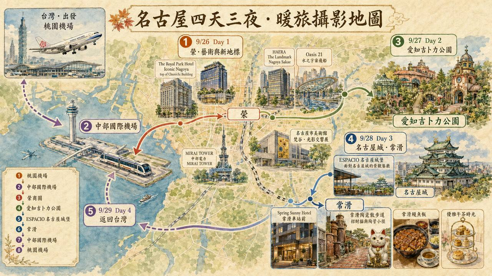
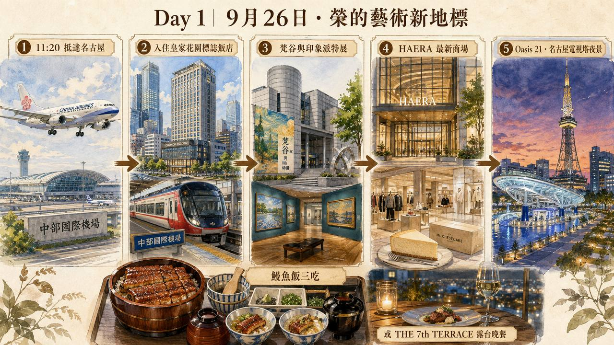
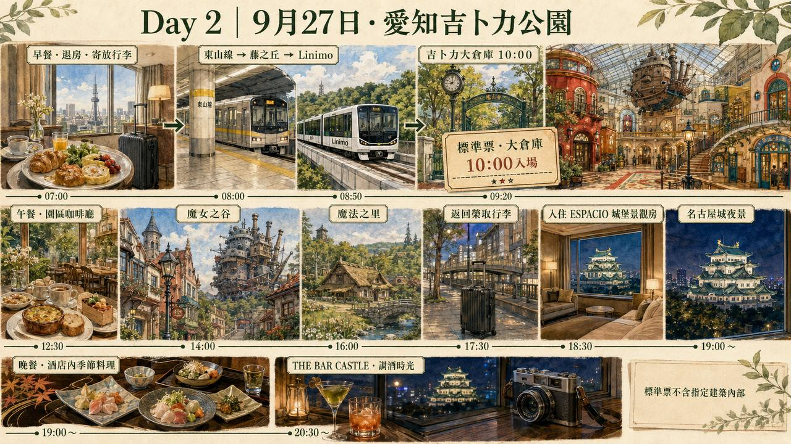
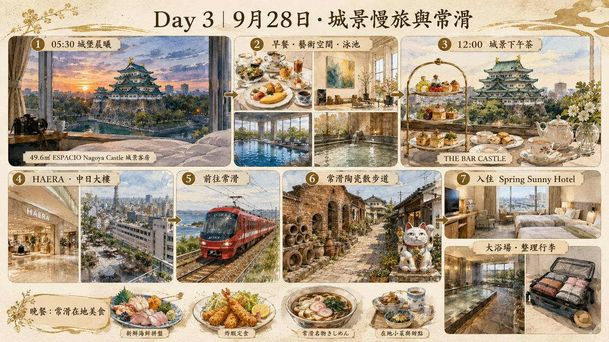
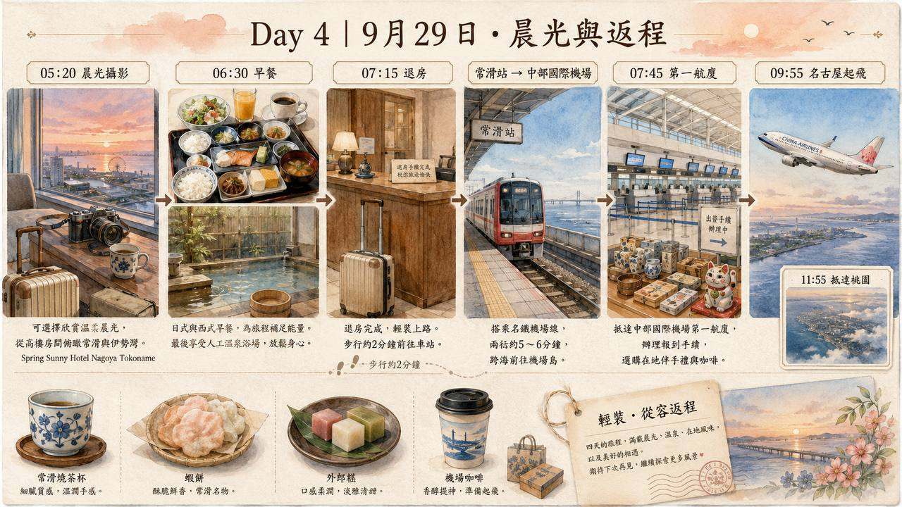

PhotoNB · Travel Guide
2026.09.26（六）— 09.29（二）
三晚三家：市區、城旁、機場旁，一天一個節奏。中部國際機場 NGO 進出。

抵達 → 入住榮商圈 → 美術館特展 → 商場 → 夜景。晚餐二選一。

整天在園區，傍晚回榮取行李，換住名古屋城旁。

早上留給城堡與飯店，下午移動到機場旁的常滑。

住在機場旁，早上不趕：拍完晨光、吃完早餐再走。

市區、城旁、機場旁，各住一晚。
9/26 · 第一晚
中日大樓高樓層，榮商圈正中心；HAERA 在樓下，Oasis 21 與電視塔步行可到。
位置：榮（名古屋市中區）
9/27 · 第二晚
面對名古屋城的景觀飯店，49.6㎡ 城景客房；早餐、藝術空間、泳池，THE BAR CASTLE 可看城喝下午茶與調酒。入住 12:00／退房 16:00，整個上午都留給城堡。
位置：名古屋城旁
9/28 · 第三晚
常滑站步行 2 分鐘、名鐵一站到機場；高樓房間看常滑與伊勢灣晨光，有大浴場。15:00 入住。
位置：常滑（中部國際機場旁）
05:30 前到桃園機場。貴賓室：T1／T2 Plaza Premium（Dragonpass，以電子票卡據點查詢為準）。
前一晚住機場旁常滑，07:45 T1 報到。貴賓室：NGO T1 國際線 Plaza Premium＋Coral。